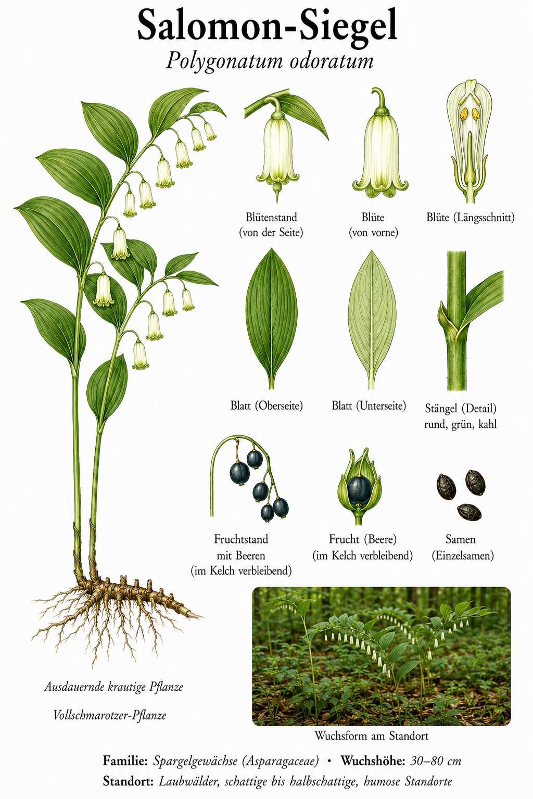
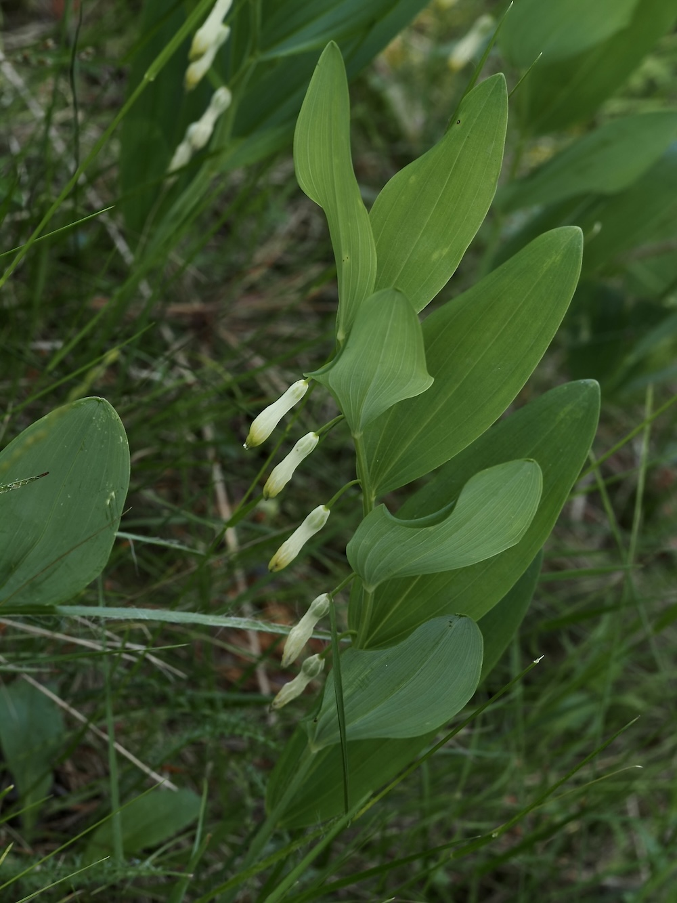

Weiße Glöckchen unter elegant gebogenem Bogen – das duftende Salomonssiegel des Waldes.


Weiße Glöckchen am Bogen
Der kantige Stängel des Salomonssiegels biegt sich elegant über; an ihm hängen, in zwei Reihen unter den Blättern, weiße, grün gespitzte Röhrenglöckchen – meist einzeln oder zu zweit je Blattachsel. Sie verströmen einen zarten Duft. Die Pflanze wächst in lichten Laubwäldern auf schattigen bis halbschattigen, humosen Böden. Im Spätsommer reifen blauschwarze Beeren.
Ein Siegel und ein giftiger Schatz
Der Name geht auf die runden Narben am unterirdischen Wurzelstock zurück, die wie ein gepresster Siegelabdruck aussehen. Vorsicht: Die blauschwarzen Beeren sind giftig. Vom Bärlauch und vom Maiglöckchen unterscheidet sich das Salomonssiegel durch den bogig überhängenden Stängel und die hängenden Glöckchen.
Wissenswertes & Merksätze
odoratum oder multiflorum?
Kantiger Stängel und meist 1–2 duftende Glöckchen je Blattachsel → Wohlriechende Weißwurz (P. odoratum). Runder Stängel, 2–5 Blüten ohne Duft → Vielblütige Weißwurz (P. multiflorum).
Schöne, aber giftige Beeren
Die blauschwarzen Beeren wirken verlockend, sind aber giftig – nur anschauen, nicht naschen.